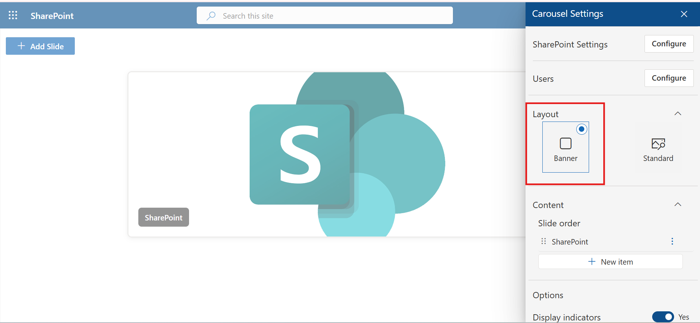
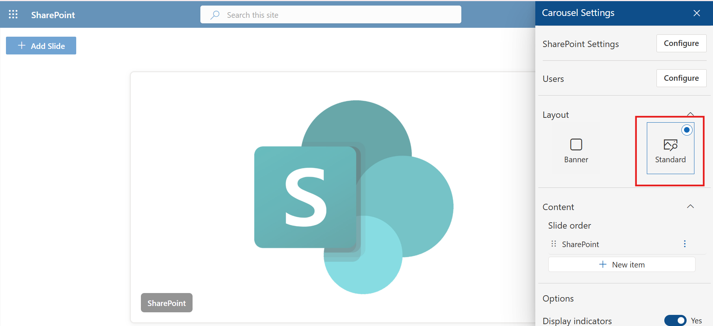

Settings
The Carousel 365 Settings panel allows administrators to configure layout, content order, and global options such as indicators and autoplay. These settings control the overall look, behavior, and navigation of the carousel on the site.
Hide SharePoint Settings
The Hide SharePoint Settings option allows administrators to disable the default SharePoint settings menu within the Carousel 365 web part. This helps prevent unauthorized modifications and keeps the interface focused only on poll-related configurations.

Users
The Users section allows administrators to manage permissions in Expense 365. The user management grid provides the following functionality:

- User Grid: Displays Name, Email, and Role for each entry.
- Role Assignment: Administrators can assign or update roles (e.g., Admin, HR, Finance, Finance Head) via the dropdown.
- Add User : Click on + add to add new user.

- Search & Pagination: Search by Name, Email, or Role, and adjust the number of entries displayed (10, 25, or 50 per page).


Layout
Select the preferred display style for the carousel:
- Banner: Displays slides in a wide banner format.
 - Standard: Displays slides in the default standard format.

Content
The Content section allows administrators to manage slide order.
- Slide Order: Use + New item to add and reorder slides according to preference.

Edit or Delete Slide: From here, you can choose to Edit a slide to update its details or Delete it permanently if it is no longer needed.
Options
The Options section provides controls for slide navigation and playback:
- Display Indicators: Toggle Yes to show navigation dots under the carousel.

- Autoplay Slides: Toggle Yes to automatically cycle through slides without user interaction.
Additionally, use the Timing option to set the duration (in seconds) for how long each slide remains visible before switching to the next one.